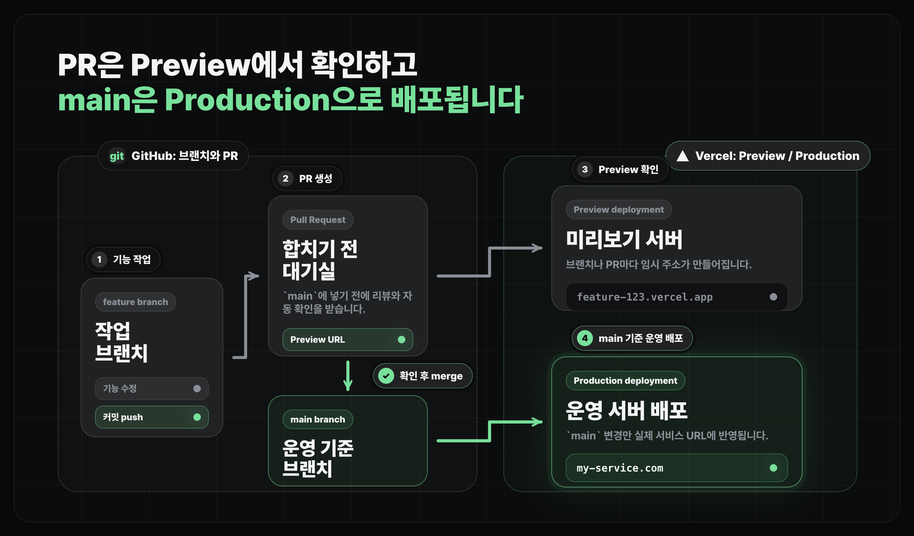
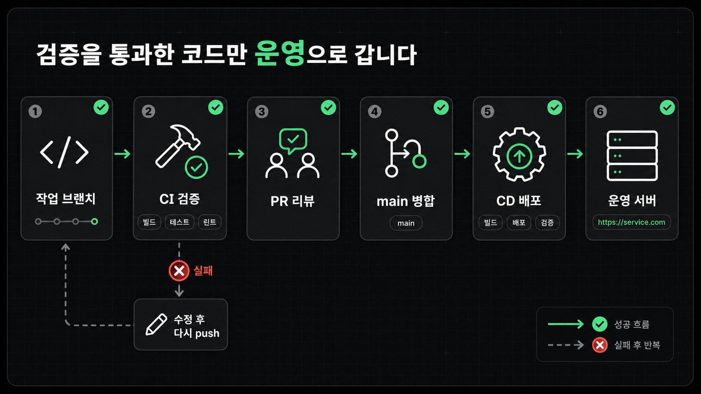

배포하기
서버 배포의 과정 이해하기
Git 브랜치를 기준으로 자동 검증과 배포 환경을 이해합니다
얻어갈 것
- 배포를 "특정 코드 상태가 특정 환경에 반영되는 흐름"으로 볼 수 있습니다.
- 브랜치, CI/CD, 배포 서비스를 각각 다른 역할로 구분합니다.
배포란 무엇인가
- 배포는 내 컴퓨터에서만 돌아가던 앱을 다른 사람이 인터넷으로 접속할 수 있는 상태로 올리는 일입니다.
- 개발 중에는
localhost에서 확인하지만, 배포 후에는 실제 주소와 서버 환경에서 확인합니다. - 그래서 배포를 볼 때는 "어떤 코드가, 어떤 검증을 거쳐, 어느 환경에 반영되는가"를 먼저 잡으면 됩니다.
배포 흐름 먼저 보기
- 예전에는 서버에 직접 접속해서 파일을 복사하고, 명령어를 치고, 프로세스를 다시 켜는 식으로 배포하기도 했습니다.
- 지금은 GitHub에 코드가 올라가면 자동으로 검증하고, 정해진 환경에 배포하는 흐름이 일반적입니다.
- 가장 기본은
main브랜치에 커밋이 올라오면, 배포 서비스가 그 코드를 빌드해서 운영 서버에 반영하는 구조입니다. - PR, 브랜치별 Preview, 자동 검증은 처음부터 꼭 모두 갖춰야 하는 필수 구성은 아닙니다. 코드베이스가 커지고 여러 사람이 같이 작업할수록
main에 넣기 전에 미리 확인하는 안전장치로 붙는 경우가 많습니다.
| 흐름 | 역할 |
|---|---|
기본: main → 운영 배포 | main에 올라온 커밋이 실제 서비스 URL에 반영되는 흐름 |
| 확장: 작업 브랜치 | 기능을 만들고 수정하는 공간 |
| 확장: Pull Request | main에 넣기 전에 리뷰와 자동 검증을 받는 공간 |
| 확장: Preview | 브랜치나 PR별로 임시 URL을 띄워 먼저 확인하는 환경 |

자동 검증과 자동 배포
CI/CD는 코드 변경을 자동으로 검증하고, 통과한 변경을 배포까지 이어 주는 흐름입니다.
- 위 흐름에서 코드가 들어올 때 자동으로 검사하는 단계가 CI이고, 통과한 코드를 실제 주소에 올리는 단계가 CD입니다.
- 지속적 통합(CI, Continuous Integration): 코드가 들어올 때 자동으로 빌드, 타입 체크, 테스트, lint 같은 검증을 돌리는 단계입니다.
- 지속적 배포(CD, Continuous Deployment): 검증을 통과한 코드를 실제 주소에 반영하는 단계입니다.
- 보통 CI는 Pull Request 단계에서 먼저 돌고, CD는
main에 합쳐진 뒤에 이어집니다. - 실패하면 수정해서 다시 push하고, 통과하면 다음 단계로 넘어갑니다.

Github Actions
- GitHub Actions는 GitHub 안에서 실행하는 자동화 도구입니다.
- 테스트 실행, DB 마이그레이션 확인, 배치 스크립트 실행, 알림 보내기처럼 CI나 운영 자동화를 직접 설계할 때 씁니다.
- 보통 Github을 쓰면 Github Action을 활용해 CI/CD 과정을 자동화하게 됩니다.
배포 환경 구분하기
브랜치와 CI/CD 흐름을 잡았다면, 다음은 "어느 환경에 반영되는가"입니다. 같은 코드라도 어디에서 확인하느냐에 따라 목적이 다릅니다.
| 환경 | 의미 |
|---|---|
로컬 | 내 컴퓨터에서 개발하고 빠르게 확인하는 환경 |
프리뷰 | 브랜치나 PR마다 자동으로 만들어지는 임시 배포 환경 |
스테이징 | 운영에 올리기 전에 실제 서비스와 비슷한 조건으로 마지막 점검을 하는 환경 |
프로덕션 | 실제 사용자가 들어오는 운영 환경 |
MVP나 작은 규모 서비스는 로컬과 프로덕션만 잘 써도 충분합니다. 프리뷰와 스테이징은 팀이 커지거나 운영 리스크가 커졌을 때 따로 두는 편이 현실적입니다.
마무리
- 배포는 서버에 파일을 올리는 단일 행동이 아니라, 브랜치와 자동화가 연결된 흐름입니다.
- 문제가 생기면 이전 배포로 되돌리는 롤백을 할 수 있지만, 자세한 대응은 운영 단계에서 다룹니다.
- 다음 레슨에서는 이 흐름을 Vercel에서 실제 프로젝트에 연결하는 방식으로 봅니다.